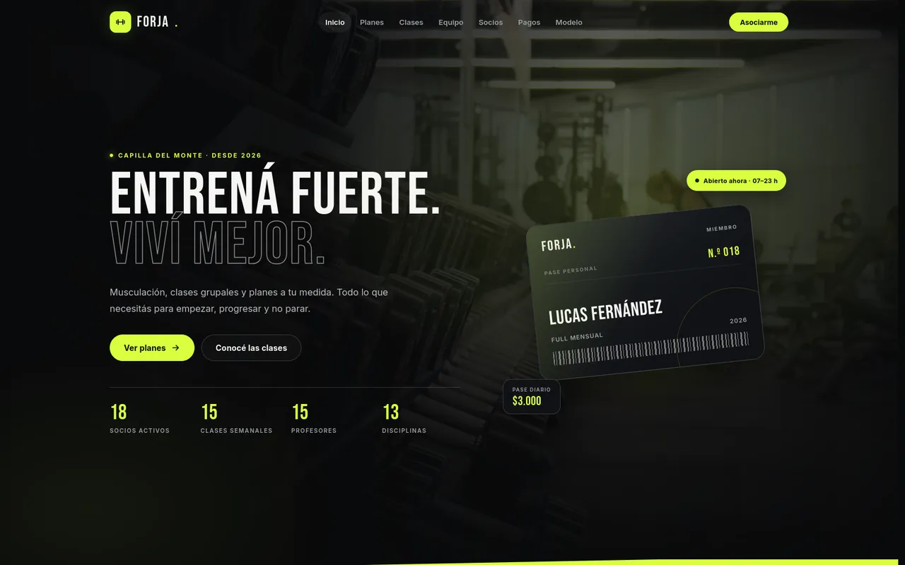

01
Frontend
Interfaces que se sienten tan bien como se ven.
HTML5CSS3JavaScript
disponible para aprender y construir
Full Stack Developer en formación
Diseño y desarrollo experiencias web de punta a punta: interfaz, lógica y datos conectados en una misma idea.
01 // sobre mí
Soy Merlín, estudiante de Programación Full Stack. Me gusta pensar cada proyecto como un sistema completo: lo que se ve, lo que procesa y lo que queda guardado.
Vengo construyendo una mirada propia sobre el desarrollo web: interfaces limpias, lógica clara y datos bien modelados. Disfruto tanto el detalle visual como el momento en que todas las piezas empiezan a funcionar juntas.
Estoy en formación activa y con ganas de sumar proyectos reales. Este portfolio es parte de ese camino.
const merlin = {
rol: "Full Stack Developer",
enfoque: ["interfaz", "lógica", "datos"],
formación: "Programación Full Stack",
ubicación: "Capilla del Monte, AR",
estado: "aprendiendo y construyendo",
curiosidad: true
};02 // stack
Del primer pixel a la última consulta. Estas son las herramientas con las que armo y entiendo cada parte de una aplicación web.
Interfaces que se sienten tan bien como se ven.
Lógica que ordena, procesa y hace funcionar.
Información bien modelada, lista para crecer.
El entorno donde la idea se vuelve proyecto.
03 // proyectos
Un proyecto real, con datos reales y una identidad propia. El primero de varios que vienen.

Proyecto destacado01 / Sitio web · Base de datos
Un sitio para un gimnasio construido a partir de una base de datos PostgreSQL real. Planes, clases, profesores, socios y pagos conviven en una interfaz con identidad propia, filtros y búsqueda.
04 // formación
Sede regional Bernardo Houssay — Capilla del Monte, Córdoba, Argentina.
Modelado relacional, SQL y PostgreSQL aplicados a un sistema de gestión de gimnasio.
HTML, CSS, JavaScript y Python. Diseño de interfaces, buenas prácticas y ganas de seguir sumando proyectos reales.
05 // contacto
Estoy abierto a oportunidades, colaboraciones y proyectos. Escribime y vemos qué podemos crear.